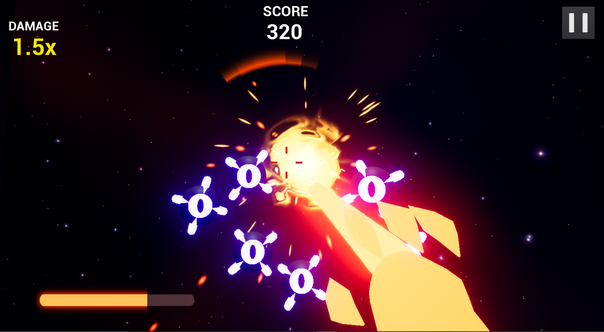

Project Laserhand: Beginnings
17/08/2020
The Backstory
"Project Laserhand" is the current title of a game I will create over the next couple months.
I have spent the last few weekd devising the game concept and tools I will be using for its creation. The main intent of this game is to create the perfect portfolio piece; a game that 'fills in the blanks' of what my portfolio is missing for me to have a good shot at getting my desired job next year.
After plentiful thought on the matter, as a developer I would like to get into a large or semi-large company ASAP. Many people like myself want to start with indie development, and that's fine, but for me I have always liked the idea of working on big projects and making great and advanced game components that would not be reasonable in an indie game. Also, I can't lie that a fixed wage is a great motivator as well. Overall, I believe that I do have the skills and ingenuity to create and publish a game that does reasonably well financially, but there are so many indie games to compete with and making a great game is only a small part of how to get your game out there.
That being said, I will be making my game in Unreal Engine 4. I have researched many job vacancies from these larger companies and almost all of them require or desire experience in the engine. I did this research a few months ago now and have since already begun to learn and practice Unreal, with projects such as Gold Runner. I will also use C++ more than Blueprints as I am quite comfotable with Blueprints already and the mentioned jobs usually require advanced C++ abilities within Unreal.
Now that I have what I will use to make the game, what else will help boost my portfolio? Well, I want to cover as many bases as possible, so my game will involve:
- Mobile platform.
- Publishing to the Google Play store.
- A VR-like gyroscopic camera.
- Enemy AI via Behaviour Trees.
- Custom FX.
The Game Idea
With these thoughts in mind, I developed the game idea "Project Laserhand" which is described as follows:
"A mobile FPS where you play as "Captain Laserhand" and fight deadly robot drones by utilising a gyroscopic camera and shooting your mighty laser weapons. You better shoot quickly though, because the robots keep coming and getting stronger!"
I think it is easy to forget that I will have a maximum of about 60 hours of work time to actually make this game, as my commitments from my other units each require just as much, and the design and publishing of the game will take time. That being said, the project will take on the mobile formula of being short and polished, with replayability in difficulty. The game will essentially be one level that starts out easy and progressively gets harder, with most players dying after one or two minutes of gameplay. Players would then play the game again and last slightly longer, giving them a better score, and hopefully a desire to keep playing to beat their previous score.
The Game Overview

I do not believe I would be able to fit in any kind of story or fleshed-out maps, so the character will be completely stationary apart from being able to look around and shoot. Enemies, which take the form of flying drones, would spawn at random positions on a sphere that completely surrounds the player at all angles. This would mean the player has to constantly turn around and look for enemies to shoot. Shooting these enemies would award the player points, which would be shown on the UI and death screen. The goal is to get as many points as possible. The enemies will have some simple behaviour-tree AI. If I have time, I will make variations of the drones with different sizes and behaviour. These types will be regular (slow, moves to player directly, low health), fast (fast, random jittering when moving to player, average health), and giant (slow, freezes when hit, high health). The behaviours of these enemies would be look at player -> move to player -> attack when in range. Perhaps a push-back ability from the player could make this tree more useful.
 In terms of visuals, I was thinking the game should be set in space as this would make robots coming from all directions make sense. It would then be great for the player to be standing on a satellite or a flying bit of space debris. The player would be "Captain Laserhand" armed with his futuristic laser-firing hand which would be all the player sees of the character. There would also be fururistic UI with a combat cursor, health bars, and a radar similar to the left image. The rest of the features would be a point system based on kills, a pause menu, a main menu, a death screen, laser effects, cool lighting, and lots of explosions.
In terms of visuals, I was thinking the game should be set in space as this would make robots coming from all directions make sense. It would then be great for the player to be standing on a satellite or a flying bit of space debris. The player would be "Captain Laserhand" armed with his futuristic laser-firing hand which would be all the player sees of the character. There would also be fururistic UI with a combat cursor, health bars, and a radar similar to the left image. The rest of the features would be a point system based on kills, a pause menu, a main menu, a death screen, laser effects, cool lighting, and lots of explosions.
Other final touches I would love to add if I had time:
- Player abilities such as stronger laser attacks when holding the fire button, healing pickups, and kill-based ability charging.
- Point records to store and try to beat.
- Purchasable skins or abilities with points.
- Kill streak point bonuses for accuracy.
- Fleshed-out enemy types.
- Global and friend-sharable scoreboards.
I cannot deny that this project will be very difficult, and I have set myself some challenging tasks and time constraints, where if I run into any major issues the game may not be deliverable in time. However, it will be great experience regardless; and that's exactly what I am looking for.
References
Haider, Anser. (2020). VR market forecast to grow in 2020 on new headsets, tech advancements. Retrieved from https://www.spglobal.com/marketintelligence/en/news-insights/latest-news-headlines/vr-market-forecast-to-grow-in-2020-on-new-headsets-tech-advancements-56027675
Tsand, Kerwin. (2015). Image showing futuristic UI. Retrieved from https://games.mxdwn.com/news/new-details-emerge-on-star-citizens-fps-gameplay/
Tsand, Kerwin. (2015). Image showing futuristic UI. Retrieved from https://games.mxdwn.com/news/new-details-emerge-on-star-citizens-fps-gameplay/
How Did I Make This Website?
5/08/2020
TL;DR I made this website with custom HTML, CSS, and JavaScript via Brackets. I also used and adapted code/components from W3Schools and CodePen. I began my website with this base and tutorial by George Martsoukos. I hosted the site via GitHub Pages and bought the domain from Google Domains.
I began the development of this site during my mid-semester holidays this year; about two months ago now. I have previously created two simple websites for a class in my Interaction Design minor, where I learnt HTML, CSS, and basic web design. I also learnt JavaScript in another class in this minor, where I made games such as Widow Mirror in the language. I applied what I learnt in these classes and learnt many new things to create this site.
At this stage in development, some parts of me regret creating the website near-completely custom, where it has given me a lot of freedom at the cost of much more work than necessary. Generally it's never a good idea to re-invent the wheel as a developer, especially since gaining web experience isn't something that means much to me. Using a template could have accomplished 90% of the things I have on this website and it would have taken 20% of the time. However, I have found the freedom refreshing as I do not rely on exterior websites, software, or free trials and I can make as tiny of an adjustment as I want.
I also streamlined my development by applying good programming practice with many reusable classes and colour variables that allowed me to try different colour themes quickly. I used GitHub pages to host the site, so applying updates was as easy as pushing my changes to a GitHub repository. Updating the repo allowed me to quickly test changes on different browsers and seek feedback. Brackets also has Live Preview software allowing me to see minor changes even more immediately.
Overall, creating this website was a great experience and it is turning out much better than expected. I am glad that I won't lose it as I have physical files and a repository, so I look forward to continually add my work experience and update this blog throughout my career. I wonder what it would look like in 5 years if I kept adding to it.
I began the development of this site during my mid-semester holidays this year; about two months ago now. I have previously created two simple websites for a class in my Interaction Design minor, where I learnt HTML, CSS, and basic web design. I also learnt JavaScript in another class in this minor, where I made games such as Widow Mirror in the language. I applied what I learnt in these classes and learnt many new things to create this site.
At this stage in development, some parts of me regret creating the website near-completely custom, where it has given me a lot of freedom at the cost of much more work than necessary. Generally it's never a good idea to re-invent the wheel as a developer, especially since gaining web experience isn't something that means much to me. Using a template could have accomplished 90% of the things I have on this website and it would have taken 20% of the time. However, I have found the freedom refreshing as I do not rely on exterior websites, software, or free trials and I can make as tiny of an adjustment as I want.
I also streamlined my development by applying good programming practice with many reusable classes and colour variables that allowed me to try different colour themes quickly. I used GitHub pages to host the site, so applying updates was as easy as pushing my changes to a GitHub repository. Updating the repo allowed me to quickly test changes on different browsers and seek feedback. Brackets also has Live Preview software allowing me to see minor changes even more immediately.
Overall, creating this website was a great experience and it is turning out much better than expected. I am glad that I won't lose it as I have physical files and a repository, so I look forward to continually add my work experience and update this blog throughout my career. I wonder what it would look like in 5 years if I kept adding to it.
Hello World!
4/08/2020
This is my first web blog post ever as a developer! I am currently working on this website, I have started the design of "Project Laserhand," and I am in the third quarter of BEEP's Adventure's development.
I have already created a weekly blog for BEEP's Adventure and I will continue adding to this, which I will simply link in a google document. My plans for this blog are to log the development of Project Laserhand and I will do a brief post about how I made this website.